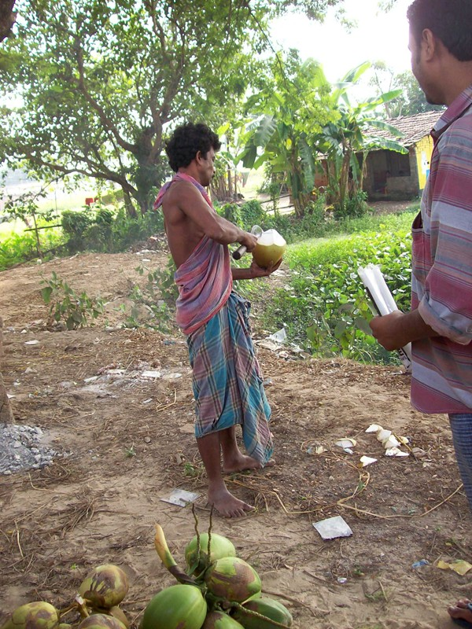
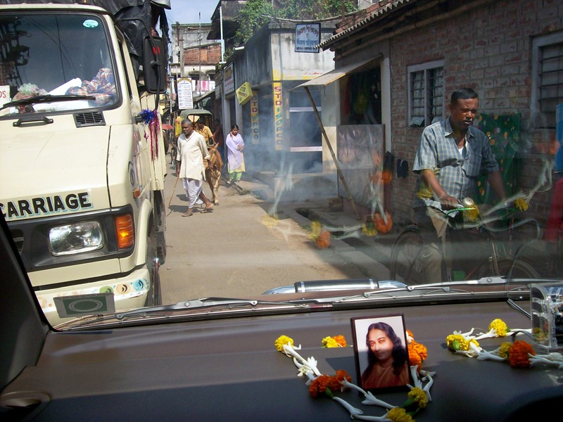
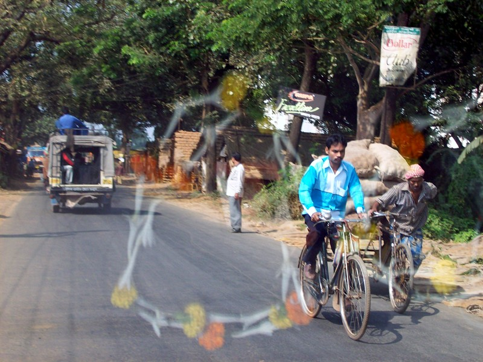
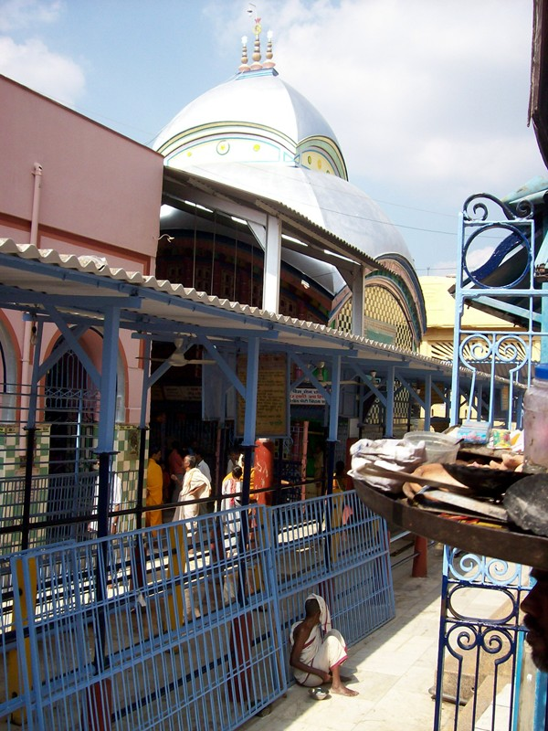

Tarakeshwar

Coconut water on the way to Tarakeshwar. When approaching a coconutwallah (I guess that's a word) in Kolkata, Ram had me coolly stroll on past, then rejoin him after the transaction was finished. Here, there was no hiding the Westerner in the group, so we probably paid double, perhaps two cents more.

Speeding is not an issue in Tarakeshwar (or anywhere else). A moment after this, we were facing two motorcycles and a cow to the right of the van.

Road to Tarakeshwar. Southwest of Kolkata is potato land. The buildings are storage sheds. Ram tried to buy a bag cheap to donate to an ashram, but no one was selling retail.
An SRF monk (Bro. Anandamoy) told of the spirituality of rural Indians--outside the Westernized big cities. A servant girl had handed him her only possession--a calendar with a religious picture--with a sweet smile, after seeing him admire it. "There was a sweetness, a humility, a purity... I could not believe it. Could not believe it. These people may not be consciously seeking God, but as soon as they do, they will find that most of the work is done."
I asked Ram about this. "Oh yes, I have seen this," he said. "In Western Bengal. Then cable television comes and it's gone."

The stone at Tarakeshwar. The line of people are waiting to get to the stone, which is a site of miraculous healings, like Lourdes. We saw people sitting outside and fasting for a cure. The stone is in a chamber to the right of the line. Inside, priests continuously perform rituals. There is a second enclosure about three feet outside the inner temple. The guy at the gate was bossy and officious about who was getting in, and it became clear that the Westerner wasn't getting into the inner compound. I got holy water splashed on my forehead by a priest, none the less.
I didn't care about not getting three feet closer. The stone, visible from outside, was emitting a palpable force. Being within a few yards of it was like standing in a strong wind. My forehead was tingling. I'd read about stones of power in fiction; this is the real thing.
The origin of the two-foot spherical stone is lost in the mists of time. Some say it might be a meteorite.